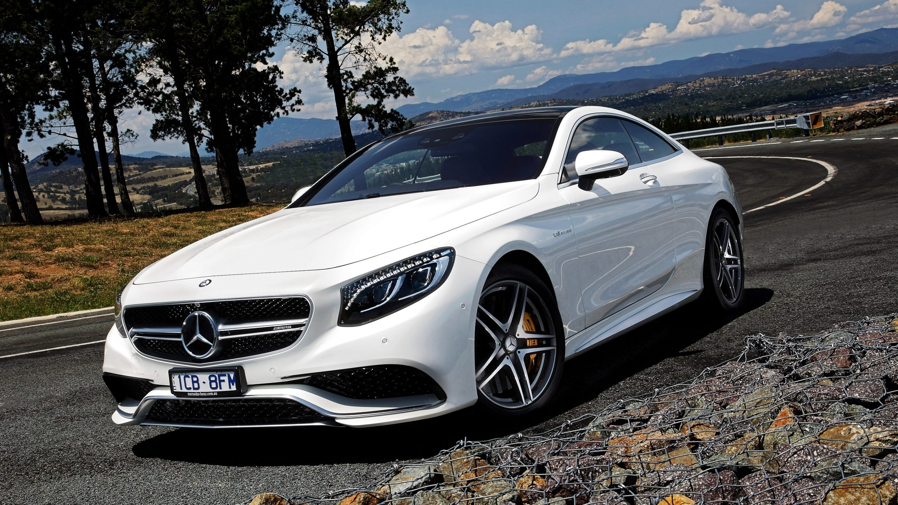
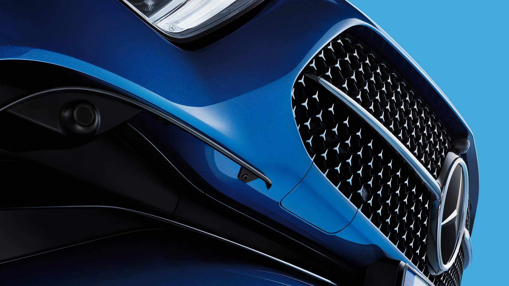
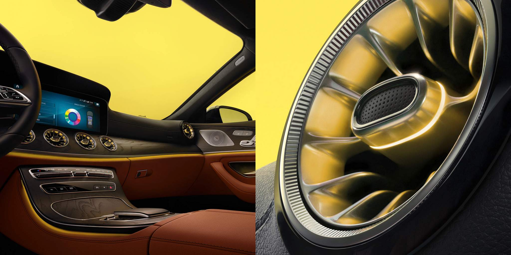
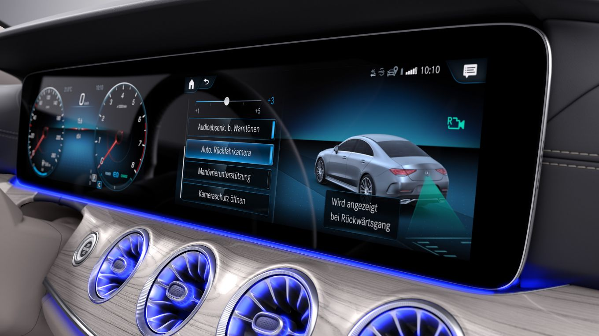

Mercedes-Benz CLS купе
Экстерьер нового Mercedes-Benz CLS после рестайлинга предстает в волнующе новом виде. Элегантный дизайн в комбинации со спортивными акцентами линии исполнения AMG Line.
Дизайн
Силуэт: культовый. Новый CLS восхищает не подверженными веяниям времени элегантными линиями и характером современной роскоши. Переходы от передней части с решеткой радиатора Star нового дизайна к динамично изогнутой крыше и далее к классической линии купе в задней части особенно гармоничны.
Комфорт
Полностью цифровая передняя панель нового CLS выводит удовольствие от вождения на новый уровень. Инновационные и интеллектуальные функции гарантируют максимальный комфорт управления. Голосовое управление и сенсорные элементы управления превращают место водителя в подключенный к сети центр управления. Кроме того, интеллектуальная мультимедийная система MBUX с искусственным интеллектом все лучше узнает предпочтительные настройки водителя. Так Вы без стресса доберетесь до цели.
Безопасность
Будь то час пик, длительная ночная поездка или незнакомая дорога, CLS ощутимо снимет нагрузку с водителя, особенно в стрессовой ситуации. Концепция, которая делает каждую поездку на автомобиле Mercedes-Benz безопасной и неповторимой, называется Mercedes-Benz Intelligent Drive. Время, которое Вы проводите за рулем автомобиля, не должно проходить впустую. Это время для отдыха. Время для восстановления сил. Автомобиль надежно и с комфортом доставит Вас до места назначения.
- Активная система помощи при парковке с функцией PARKTRONIC
- Камера заднего вида
- Парковочный пакет с камерой заднего вида
- Парковочный пакет с камерой 360°